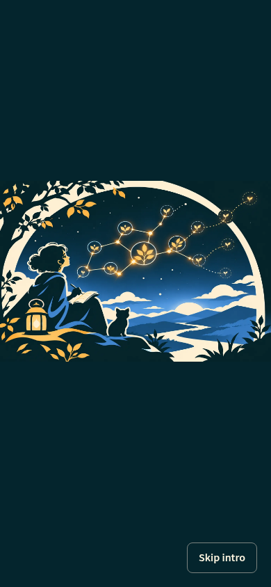

A constellation, then Explore.
Approved 2.4-second motion reference: the supplied landscape stays still, connected sprouts gather overhead, the central plant appears last, then the scene dissolves into Explore. The user authorized implementation; this page preserves the approved standalone study, not runtime acceptance.
The sequence
0–0.15s: landscape. 0.15–1.35s: overlapping sprouts and connections. 1.15–1.65s: central plant resolves. 1.65–1.95s: completed hold. 1.95–2.4s: dissolve into Explore.
Actual-client inspection



Actual desktop dissolve · Actual phone dissolve · Runtime inspection and validation receipt


These captures establish the initial integration’s approved artwork/motion, not final sticky-header behavior. The first shell wrapper introduced a real sticky-header regression, initially misclassified as a test-setup issue. The guard now returns a Fragment and preserves the original header layout box. Independent final verification/review and user runtime acceptance are pending; the scene and timing are unchanged.
What this study does—and doesn’t—prove
Skip intro works immediately; Escape also skips. Reduced motion bypasses the intro. There are no loops, scene movement, sound, progress meanings or demo caption/Pause/Replay controls inside the proposed splash.
Explore is an existing actual-client screenshot, including its approved clearing and navigation—not working search controls or real navigation. Intended scope is only an explicit visit to /; direct Explore and deep links would not show this intro. That routing is not implemented here.
Source, scope and validation · Provenance · Browser checks and actual elapsed times